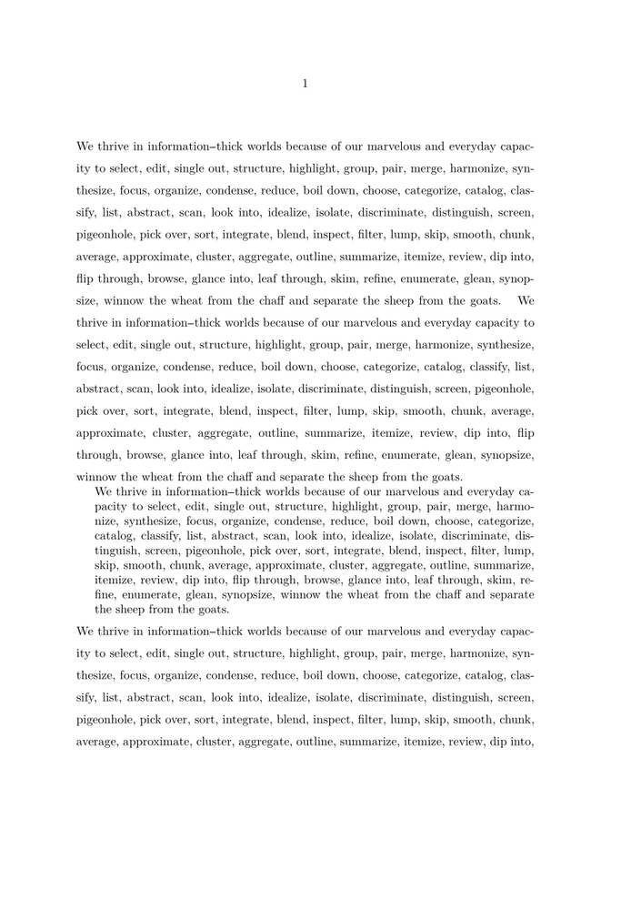

Contents
Summary
The command \setupinterlinespace is used to set the (general) baseline skip.
Settings
| \setupinterlinespace[...,...][...=...,...] | |
| [...,...] | name |
| line | dimension |
| height | number |
| depth | number |
| minheight | number |
| mindepth | number |
| distance | dimension |
| top | number height |
| bottom | number |
| stretch | number |
| shrink | number |
Settings argument
Settings name
Description
\setupinterlinespace
sets up the distance between lines. can be used in three variants:
-
Without any keywords:
\setupinterlinespaceThe command sets the baselineskip to the default value of2.8ex. Use this after changing the font size.
-
With a keyword:
\setupinterlinespace[KEYWORD]
The following keywords are available:- reset
- small
- medium
- big
- on
- off
-
Setting all the parameters involved in line positioning:
-
line: base interline spacing (baselineskip) (e.g. 3ex or 12pt) -
height: size of strut as multiple ofline(e.g. 0.72) -
depth: size of strut as multiple ofline(e.g. 0.28) -
top: topskip (as multiple of line height) -
bottom: maxdepth (as multiple of line height) -
stretch: (glue) line stretching
-
Note that the lineheight as shown in \showlayout is calculated from the baselineskip.
However, a baselineskip of 0 will result in a hardcoded value being used, so refrain from that.
If you want the lineheight to never exceed the font size,
use a very small value such as 1pt for line.
When setting up the interlinespace, the unit matters:
% interline space adapts itself to body font size \setupinterlinespace[line=2.8ex] % set interlinespace to 12pt for every font size --- don’t do this! \setupinterlinespace[line=12pt] % set interlinespace for a particular body font size % Useful if you think in terms of "nine-point type on eleven-point leading" \definebodyfontenvironment[9pt][interlinespace=11pt]
Examples
Call
\setupinterlinespace
after a font change
-
\setupwhitespace[big] Original baselineskip=\the\baselineskip { \definedfont[Serif at 12pt] The interlinespace does not change automatically when the font changes\crlf baselineskip=\the\baselineskip } { \definedfont[Serif at 12pt] \setupinterlinespace Invoking setupinterlinespace sets baselineskip to 2.8ex of current font\crlf baselineskip=\the\baselineskip }
-

Example within \startnarrower ... \stopnarrower
-
\setupinterlinespace[5] % this has no effect before \starttext \starttext \input tufte % this is default, not 5 \setupinterlinespace[big] \input tufte % this is big \startnarrower[left] \setupinterlinespace[small] \input tufte % this is small \stopnarrower \input tufte % this is big again \stoptext
- 
Notes
- By Hraban on 2024-04-01T19:46:18+0200 :
-
It seems that
\setupinterlinespace[line=XX\baselineskip]interacts badly with \setuplayout while\setupinterlinespace[big]works fine.
See also
- \defineinterlinespace
- spac-ver.mkiv
- \setuplocalinterlinespace to set interline spacing locally
- \definebodyfontenvironment with keyword interlinespace to set interline spacing globally
- \setupwhitespace to set up inter-paragraph spacing